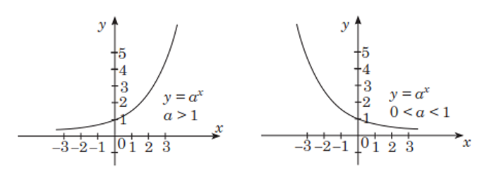

Görkezijili funksiýa:

Kesgitleme: y = ax görnüşli funksiýa (bu ýerde a > 0 we a ≠ 1) görkezijili funksiýa diýilýär.
Görkezijili funksiýa aşakdaky häsiýetlere eýedir:
1. Görkezijili funksiýanyň kesgitleniş ýaýlasy ähli R
hakyky sanlaryň köplügidir.
Bu häsiýet ax derejäniň a > 0 bolanda, x-iň ähli hakyky san bahalarynda kesgitliliginden gelip çykýar.
2. Görkezijili funksiýanyň bahalar ýaýlasy ähli R+ položitel hakyky sanlaryň köplügidir.
Onuň şeýledigine göz ýetirmek üçin, ax = b (a > 0, a ≠ 1)
deňlemäniň b <= 0 bolanda köküniň ýokdugyny, b > 0 bolanda bolsa, köküniň bardygyny görkezmek ýeterlikdir.
3. Görkezijili funksiýa a > 1 bolanda, ähli hakyky sanlar köplüginde artýar.
4. Görkezijili funksiýa 0 < a < 1 bolanda, ähli hakyky sanlar köplüginde kemelýär.
5. Görkezijili funksiýanyň grafigi (0; 1) nokat arkaly geçýär.
a > 0 bolanda a0 = 1 bolanlygyna görä ähli görkezijili funksiýalaryň grafikleri (0; 1) nokatdan geçer.
Görkezijili deňsizlikler:
Görkezijili deňsizlikleriň çözülişi, köplenç, ax > ab ýada ax < ab
görnüşli deňsizlikleriň çözülişine getirilýär.
Bu deňsizlikler görkezijili funksiýanyň artýan we kemelýän häsiýetlerinden peýdalanyp, çözülýär